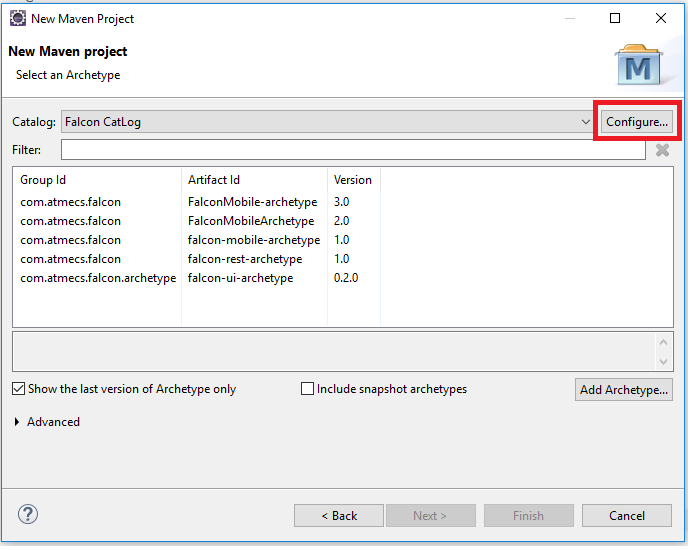

Falcon-UI Framework
The Falcon UI Automation Framework is a tool for testing web applications.
This framework can be used for automating most routine processes in web application, such as:
1. Cross browser Testing, Execute on Local machine, remote machine(grid), Cloud (BrowserStack).
2. Verification of different data types(Primitive and Non-Primitive).
3. Utilities to read and write with different file formats(.xls, .xlsx, .txt, .csv, .xml).
Falcon-UI Automation framework uses the following tool and frameworks:
1. Java - Programming language
2. TestNG - Unit Framework
3. Maven - Build Management Tool
4. Selenium - Automation Tool.
Environment Requirements:
a)Configure Java and Maven
Follow the steps mentioned in the below link:
install-maven-in-windows
b) Eclipse IDE
Follow the steps mentioned in the below link:
eclipse-ide-download-and-install
C)TestNG
Follow the steps mentioned in the below link:
selenium-webdriver/install-testng
Setup Falcon UI Project
Following are the steps to start Falcon-UI project for first time:
Open Eclipse.
Click on File menu and select New from given list then click on Maven Project.
Click Next under Maven Project.
Click Configure.

Click on Add Remote Catalog.

Enter below details under Remote Archetype Catalog window and click Ok.
A)Catalog File :
http://10.10.10.150:8081/nexus/service/local/repositories/falcon/content/archetype-catalog.xml
B)Description :
It can be any name to identify the Catalog say Falcon-Catalog.
Understanding Project Structure:
In this, we will try to explore the project folder structure.
1.src/main/java - Application/Library sources
2.src/main/resources - Application/Library resources
3.lib - Browser Executables
4.pom.xml
5.testng.xml
1.src/main/java - Application/Library sources:
a)This source folder contains packages like runner, testsuite and testscript.
b)The main package name follows as ${Group Id}.${Artifact Id}.
c)Earlier, we have created Artifact Id as 'falconUI' and Group Id as 'com.qa.automation'.
d)So Now, the package name will be com.qa.automation.falconUI.
e)For any application, if you want to add source code folder like utils, helper etc., you can very well
create
'utils/helper' folder under 'src/main/java/${packageName}' and keep all your domain utils/helper
under
it.
1.1.${packageName}/runner/
This folder contains ‘TestNGRunner.java’ file which has the purpose to set up listeners, suites to run
to
testng.xml and upload TestNG results (if configured, we will discuss this more detailed in Understanding
config.properties).
Understanding config. properties:
This is the main file which set up the complete test project. Here we will discuss all the main
configurations one by one.
1.SuiteFileName – This is the property where we store the master *.xml file.
In our case, it is testng.xml
2.Testreport.uploadurl– This is the property where we store the report dashboard report upload
URL. In
our case, it is http://10.10.10.150:8083/testreport/upload
3.Onfailureimage.uploadurl - This is the property where we store the report dashboard image
upload URL.
In our case, it is
http://10.10.10.150:8084/image/upload
4.Instances – This is the property where we store the number of parallel instances to run. It
will
create numbers of threads to execute script parallel.
5.ClientName – This is the property where we store the Client Name to identify the Report
Dashboard.
6.ModuleName – This is the property where we store the list of suite files, comma separated, to
execute.
Module name is the name of the suite file which are present in src/main/resources/suitefile/ without
extension. To add multiple modules(suites) provide multiple ModuleName values separated by comma
(,)
For Example:
ModuleName=sample1,sample2,sampe3
7.BrowserCaps – This is the property where we store the test browser details according to
instances.
Note: To add multiple browsers provide multiple BrowserCaps value separated by comma (,).
Supported OS: Win, Mac, Linux
Supported Browsers: firefox (version<=46), chrome, ie, safari
For
Example:
WIN_7_chrome_66 (if instances
as 1)
WIN_7_chrome_66, WIN_7_firefox_61 (if instances
as2)
8.Environment – This is the property
where we store test environment details like
a.local (for local machine run),
b.grid (for
Selenium
Grid Machine run)
c.browserstack (for Browser Stack run)
9.GridIP – This is the
property where we
store grid machine details. This property will be picked only when the environment is grid.
10.
automatic.bug.creation – This is the property where we store a Boolean value to create a bug
in
JIRA. If True, it will create a JIRA bug according to given properties in jira.properties If False,
it won’t create any bug in JIRA even if there is an error or failure.
11.
capture.screenshot – This
is the property where we store a Boolean value to capture a screenshot on test failure. If True, it
will capture a screenshot on test failure If False, it won’t capture any screenshot even if there is
an error or failure.
12. UploadResults – This is the property where we store a
Boolean value to
upload the results on completion of execution. If True, it will upload the testNG results along with
screenshot images (if capture.screenshot is true) and error messages if any. If False, it won’t
upload the testNG results upon completion of test execution.
Creating and Running Test Scripts:
In this we will look how to create Test Scripts and execute them as per test requirement.
1.Creation of Test Scripts:
Create Your Test Scripts under testscript folder as shown in below.
Create a simple class in testscript folder.